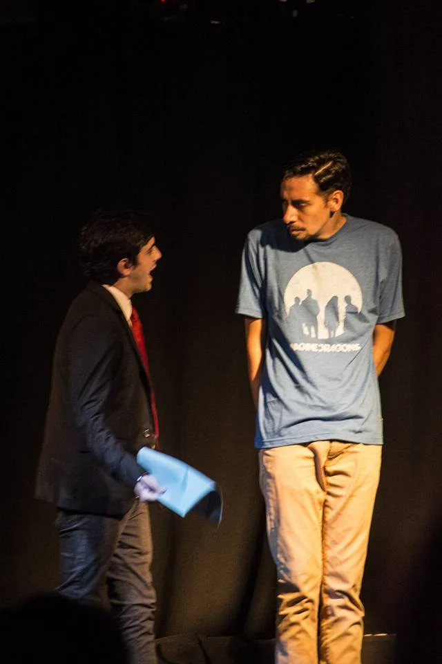

TEATRO
CRIATURAS DE LA NOCHE
Criaturas de la noche, indaga en la vida de cuatro taxiboys.
Ellos pasan sus noches ofreciendo sus cuerpos, como dice uno de ellos mi cuerpo es mi pyme. Los lugares los cuales ellos transitan diariamente.
Esta obra propone acercarse, conocer, entender un universo que puede sorprendernos a la vuelta de una esquina.
Elenco: Santiago Gil - Federico Marrero - Matias Calabrase - Leonardo Basualdo - Nicolàs Barchiesi y Jesùs de la Torre
Invitados : Rama y Mati (Strippers) Director: Henry Aran
